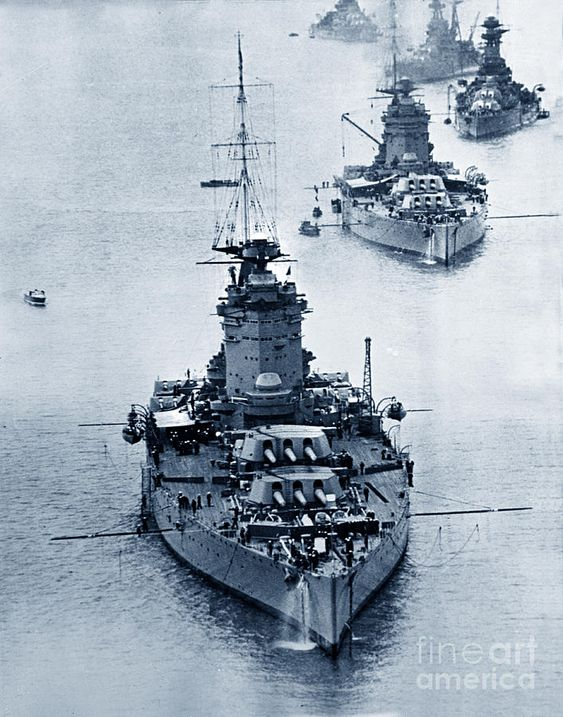
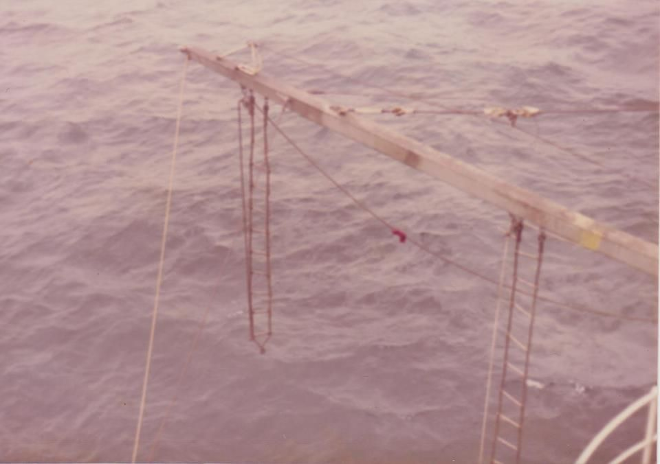
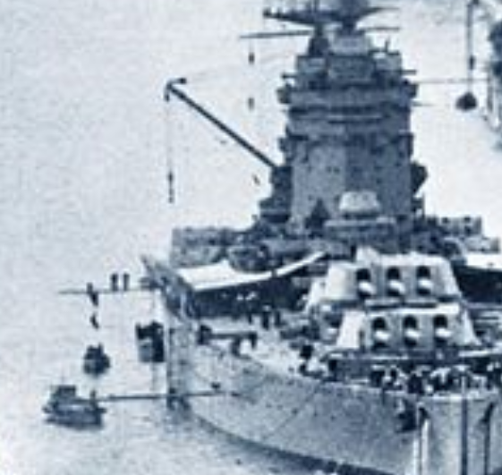
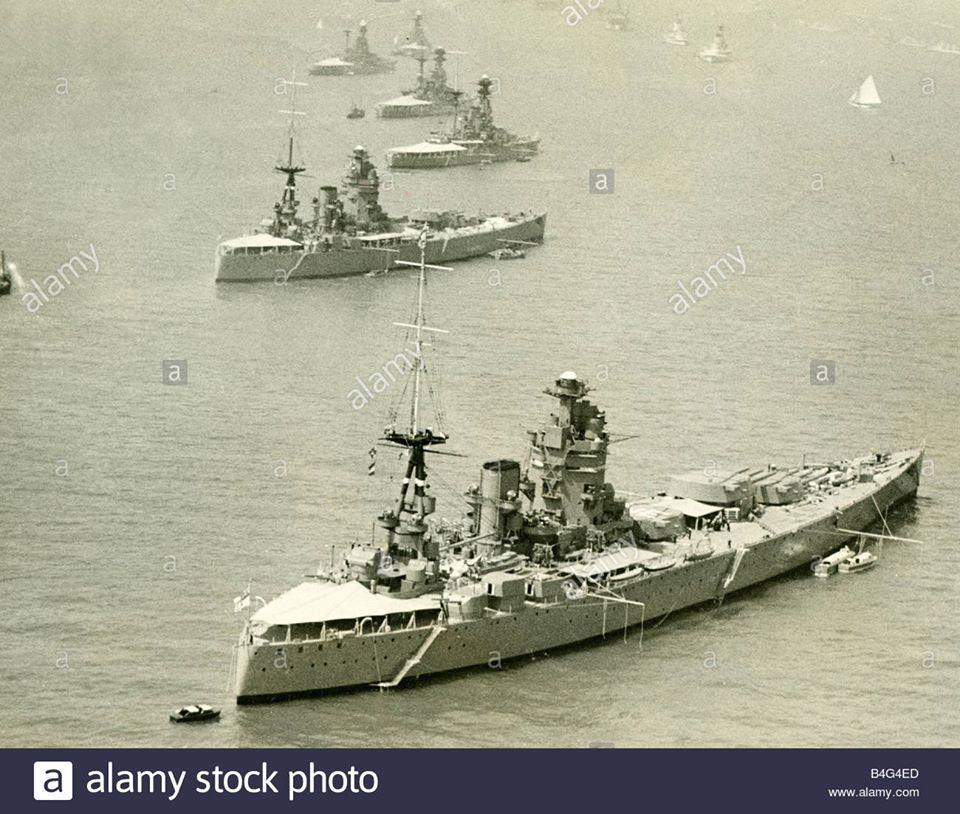
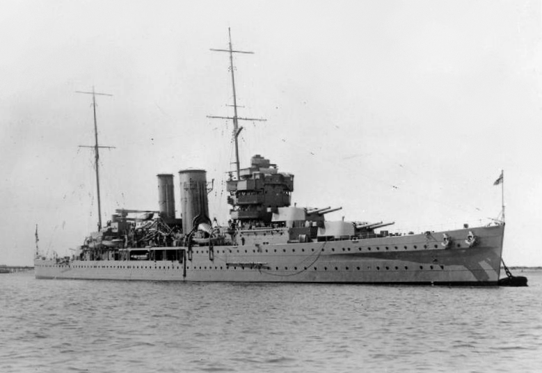
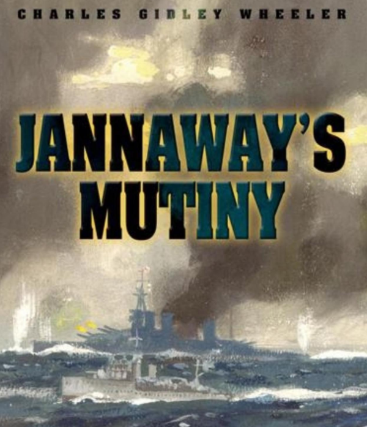
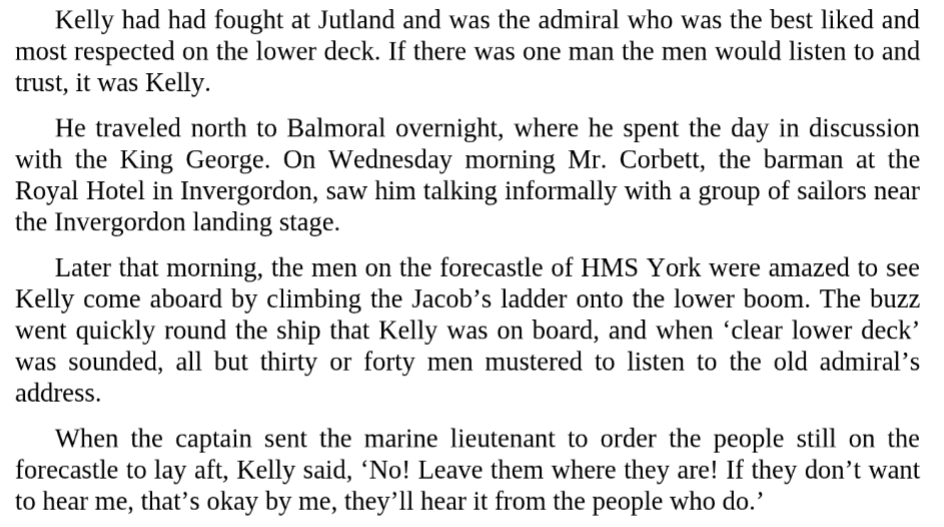
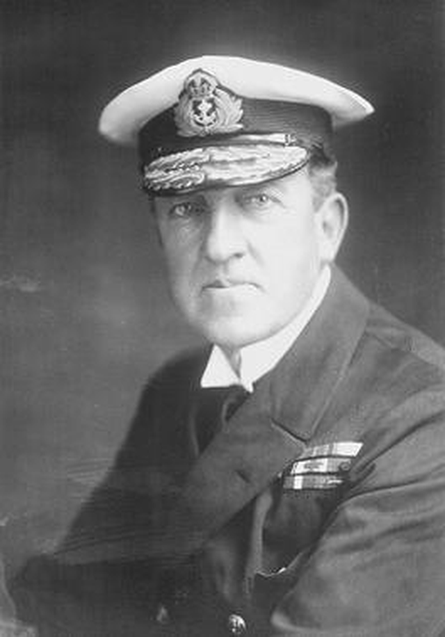
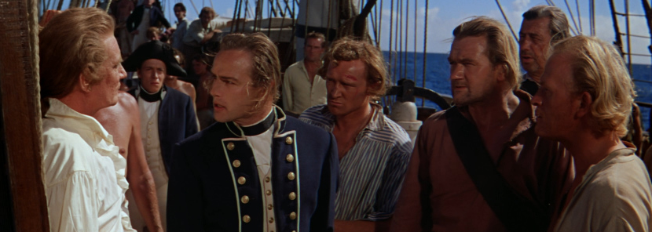

가로활대의 정체와 인버고든(Invergordon) 반란 사건
게시: 2020-07-02T00:40:51+09:00
최근에 어느 인터넷 커뮤니티에서 아래와 같이 두 척의 넬슨급 전함 두 척을 선두로, 영국 로열 네이비의 전함들이 열을 지어 정박한 사진이 올라왔습니다. 어차피 넬슨급 전함은 딱 두 척 뿐이니 하나는 넬슨(HMS Nelson)이고 다른 하나는 로드니(HMS Rodney)일텐데, 어느 것이 어느 것인지 저는 구분하지 못하겠습니다. 그런데 가만 보니 모든 전함들 옆구리에 긴 막대가 가로로 꽂혀 있고 거기서 뭔가 밧줄을 늘어뜨리고 있더군요. 저게 말로만 듣던 어뢰 방어망(torpedo net)을 지지하는 가로활대인가 싶어서 그 커뮤니티에 댓글로 물어보았습니다.
친절하게도 댓글이 한 20~30개가 달리더군요. 먼저 어뢰 방어망은 아주 무겁기 때문에 저런 가느다란 가로활대로는 지탱할 수가 없답니다. 저건 boat boom, 즉 보트 지지용 가로활대라고 합니다. 지금 저 사진 속 바다는 매우 잔잔하지만, 조금이라도 파도가 치는 바다에서는 정박한 전함에 바싹 붙여서 보트를 대는 것은 매우 위험한 일입니다. 파도에 밀려 보트가 전함 옆구리에 쿵쿵하고 반복해서 들이받게 되니까요. 그래서 사람이 타고 내리는 작은 보트를 댈 때는 저렇게 긴 가로활대를 갑판에서 내밀고, 거기서 내려오는 밧줄에 보트를 묶는 것입니다.

(사진의 원제는 'Royal Navy rush hour'라고 되어 있더군요. 앞쪽 전함이 넬슨이고 뒤쪽이 로드니라고 합니다.)
그러면 사람은 보트에서 전함 갑판으로 밧줄을 타고 올라가냐고요 ? 선원이라고 다 몸이 날렵하지는 않습니다. 그래서 한가닥의 밧줄을 타고 올라가도록 하지는 않고, 야곱의 사다리(jacob's ladder)라는 밧줄 사다리를 타고 오르내리게 합니다. 그걸 타고 가로활대까지 올라간 뒤에, 좁은 가로활대 위를 기어서 전함 갑판으로 옮겨 타는 것이지요. 실제로 위 사진 속 두번째 전함을 확대해보면, 보트 지지용 가로활대 위에 사람이 올라타 있는 것이 보입니다.

(이렇게 boat boom에서 야곱의 사다리가 늘어내려져 있습니다.)
(다들 아시겠습니다만 원래 야곱의 사다리는 야곱이 광야에서 꿈 속에 본 천국에서 내려오는 사다리로서, 그걸 타고 천사들이 오르내린다고 되어 있습니다.)

(두번째 넬슨급 전함의 boat boom을 확대한 사진입니다. 정말 사람이 boat boom 위에 서있는 것을 보실 수 있습니다.)
모든 사람들이 야곱의 사다리와 보트 지지용 가로활대로 전함에 올라야 하는 것은 아닙니다. 따라서 파도가 잔잔할 경우에는 뱃전에 탈착식 출입 계단을 따로 붙였습니다. 이걸 accommodation ladder, 흔히 accom ladder라고 부릅니다. 다만 장교용 accom ladder와 사병용 accom ladder를 별도로 마련했습니다. 아래 사진은 두 척의 Nelson-class 전함들이 정박한 또 다른 모습인데, 여기에는 모두 전함 중간에 하나, 고물 쪽에 하나, 총 2개의 accom ladder가 붙어 있는 모습을 보실 수 있습니다. 아마도 고물쪽에 붙은 accom ladder가 장교용일 거에요.

(역시 넬슨급 전함의 모습입니다. Boat boom에 보트들이 묶여 있는 것도 보이고, 우현 뒤쪽에 장교들이 이용하는 계단이 마련되어 있는 것도 보입니다.)
그런데 이 보트 지지용 가로활대에는 역사적 사연이 있습니다. 이 이야기는 영국 증권 시장의 패닉과 파운드화의 폭락, 그리고 궁극적으로 영국이 금본위제를 포기하는 결과를 낳습니다.
이 이야기는 1931년 9월에 시작됩니다. 당시는 세계 대공황 때문에 무척 어려운 시절이었고, 영국도 마찬가지였습니다. 영국은 그 위기 극복을 위하여 모든 공공 근로자들의 급여를 10% 삭감하기로 했고, 해군 장교와 수병들도 그 적용을 받게 되었습니다. 그런데 1925년 이전에 입대한 수병들은 급여 체계가 달랐기 때문에, 결과적으로 10%가 아닌 25% 삭감을 당하게 되었습니다. 마침 훈련을 위해 스코틀랜드 동부의 작은 항구인 인버고든(Invergordon)에 모였던 영국 해군 대서양 함대의 수병들은 이 소식을 접하고는 크게 동요했습니다.
항구와 함상에서 술렁이던 수병들은 9월 15일 급기야 훈련을 위한 출항을 거부하고 파업을 시작합니다. 이것이 인버고든 반란 (Invergordon Mutiny) 사건입니다. 반란이라고 하면 수병들이 무장하고 장교들을 돛대에 목매달고 뭐 그런 걸 연상하기 쉽지만 그런 정도는 아니었고 글자 그대로 파업 정도였습니다. 장교들에게 적대적인 태도를 보이지도 않았고 필수적인 근무, 가령 견시라든가 보일러 작업 등은 계속 진행했습니다. 원래 이런 상황을 막기 위해 각 군함에는 로열 마린, 그러니까 해병대가 별도로 탑승하고 있었지만, 이 해병대원들조차도 진압은 커녕 수병들의 파업에 동참해버렸습니다.
어쨌거나 영국 해군이 대대적으로 반란을 일으켰다는 뉴스는 그렇쟎아도 어려운 영국 경제에 치명타를 입혔습니다. 이 반란에 참여한 군함들은 영국 해군 대서양 함대 소속의 주요 전함들인 후드(HMS Hood), 로드니(HMS Rodney), 넬슨(HMS Nelson), 워스파이트(HMS Warspite), 벨리언트(HMS Valiant), 말라야(HMS Malaya), 리펄스(HMS Repulse) 등으로서, 제2차 세계대전사에 관심 많으신 분들은 다들 귀에 익숙하실 주력 전함 및 전투순양함들입니다. 물론 HMS York 등 기타 순양함들도 있었습니다. 그야말로 섬나라 영국의 안보를 책임지는 제1진 병력이 대거 반란을 일으켰으니 난리가 날 만 했지요. 이 소동은 결국 런던 증시를 패닉으로 몰아넣었고 파운드화는 폭락했으며, 반란이 일어난지 불과 6일 뒤인 1931년 9월 21일 영국 정부는 결국 금본위제를 포기한다고 선언을 해야 했습니다.
상황이 이렇게 나빠진 것에는 당시 영국 해군성(Admiralty)이 상황을 안이하게 보고 '수병들을 통제하라' '예정된 훈련을 위해 즉각 출항하라' 등 강 건너 불구경 식의 훈령만 내렸기 때문이었습니다. 결국 영국 해군성은 수병들의 불만을 수용하고 1925년 이전 입대 수병들에 대해서도 급여 삭감을 10%만 적용하고 가족 수당 지급 대상을 확대하는 등의 양보 조치를 취하면서 이 반란을 무마시켰습니다.
이 와중에 수병들을 설득하기 위해 노력한 분이 켈리(Sir John Donald Kelly) 제독이었습니다. 해군성은 평소에도 수병들 사이에서 존경의 대상이던 그를 현장에 급파했고, 켈리 제독은 수병들을 설득하기 위해 권위에 의존하지 않고 직접 수병들을 찾아갔습니다. 가령 중순양함 요크(HMS York)를 찾은 켈리 제독은 보통 제독이 하듯이 뱃전에 accom ladder를 설치하고 해병 의장대의 사열을 받으며 승선하지 않고, 바로 저 야곱의 사다리와 보트 지지용 가로활대를 타고 승선하여 갑판으로 직행했습니다. 수병들은 제독이 야곱의 사다리를 오르는 그 놀라운 광경을 보기 위해서라도 켈리 제독에게 모일 수 밖에 없었고, 켈리 제독은 수병들에게 손쉽게 연설을 하고 대화를 나눌 수 있었습니다. 30~40명의 수병들이 켈리 제독이 연설하는 곳에 오지 않고 원래 농성하고 있던 앞갑판(forecastle)에 계속 집결해 있자 해병대 장교가 그들에게 집합 명령을 내리려 했는데, 켈리 제독은 '어차피 나의 말은 결국 동료들에 의해 그들에게도 전달될 것'이라며 만류했습니다.

(영국 해군 중순양함 HMS York입니다. 이 순양함은 지중해 크레테 섬에서 이탈리아 해군 고속정의 자폭 공격과 독일 공군 급강하 폭격에 피격되어 수리가 불가능할 정도로 대파되어 좌초된 채 버려졌고, 전후에야 해체되었습니다.)
 
(이 사건을 기록한 Janaway's Mutiny 라는 책에 나온 내용입니다.)

(켈리 제독입니다. 이 분은 반란 사건 다음 해인 1932년 기사 작위를 받고 1936년 비교적 젊은 나이인 65세에 병사했습니다.)
누가 뭐라고 해도 결국 국가를 지키는 것은 군함이나 탱크, 전투기가 아니라 그것들을 운영하는 병사들입니다. 그리고 그들은 상관의 명령을 따르는 병사이기 이전에 시민이고 인권을 가진 인간입니다. 그런 점을 잊고 상하 갑을 관계에 집착하면 언젠가는 사단이 날 수 밖에 없습니다. 그런 것은 꼭 군인에게만 해당하는 이야기도 아닙니다. 우리 주변에는 boat boom으로 상징되는 쓸데없는 상하 갑을 관계가 없는지 항상 생각해보아야 합니다.

(해군 선상 반란하면 말론 브란도 주연의 1962년 영화 '바운티 호의 반란' (Mutiny on the Bounty)가 정말 명작입니다. 좀 각색이 많이 들어가긴 했지만 이 영화는 실화에 바탕을 두고 있는데, 왜 말론 브란도가 반란을 일으킬 수 밖에 없었는지, 과연 저렇게 수병들을 억압하는 함장이 함장 노릇을 하는 것이 맞는지, 영화를 보는 내내 반란군 측에 공감이 가게 됩니다. 다른 거 다 떠나서, 저 영화 진짜 꿀잼입니다. 기회가 닿으면 꼭 보시기 바랍니다.)
Source : Janaway's Mutiny by Charles Gidley Wheeler
https://en.wikipedia.org/wiki/HMS_York_(90)
https://en.wikipedia.org/wiki/Pound_sterling
https://en.wikipedia.org/wiki/Invergordon_Mutiny
https://en.wikipedia.org/wiki/John_Kelly_(Royal_Navy_officer)